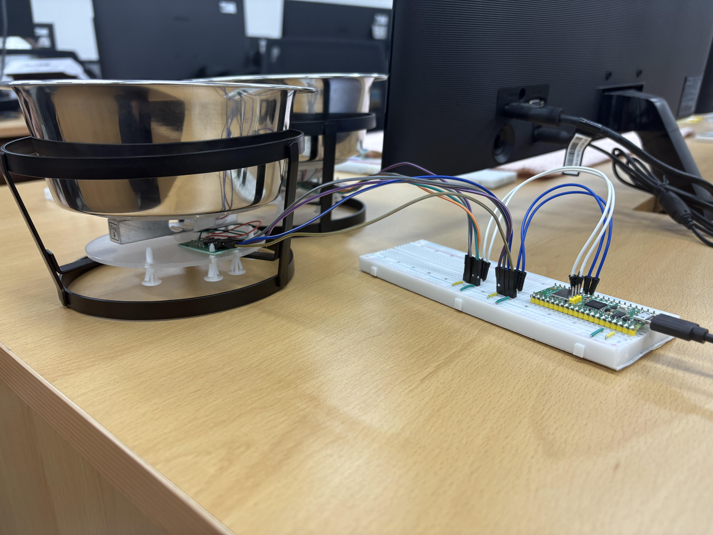
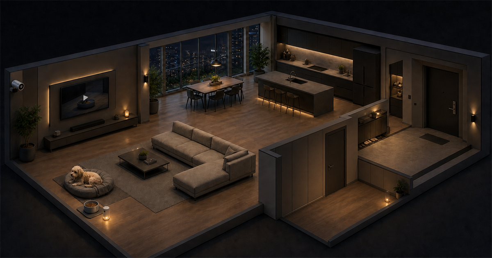
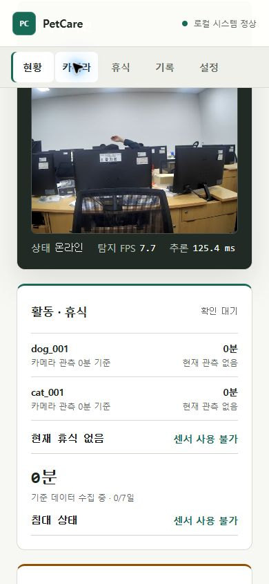
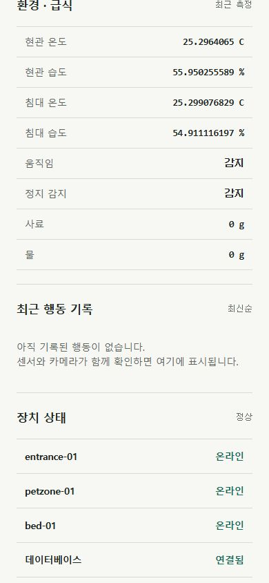

반려동물 스마트홈
집 안의 작은 신호를
하나의 상태로 읽다
센서, 엣지 AI, 로컬 서버, 웹 대시보드를 연결한 반려동물 홈 모니터링 시스템
문제 정의
한 센서만으로는
반려동물의 하루를 설명할 수 없습니다.
압력은 감지됐는데누가 누웠는지 알 수 없습니다.
밥 무게가 줄었는데실제로 먹었는지 알 수 없습니다.
움직임이 감지됐는데반려동물인지 사람인지 알 수 없습니다.
하나의 시스템
PetCare는 공간의 신호를
행동의 맥락으로 바꿉니다.
센서
침대 압력, 사료·물 무게, 온습도, 움직임을 원시값으로 수집합니다.
카메라
dog, cat, person을 탐지하고 급식·침대 ROI 안의 위치를 확인합니다.
판정
센서와 영상이 같은 상황을 확인할 때 식사와 휴식 이벤트를 만듭니다.
웹
사용자는 한 화면에서 영상, 센서값, 행동 기록과 장치 상태를 확인합니다.
침대 센서
침대는 압력과 카메라가 함께 확인합니다.
3채널 FSR이 눌림의 분포를 읽고, 카메라가 dog 또는 cat의 위치를 확인합니다.
- 센서는 0-4095 ADC 원시값만 전송합니다.
- 기준선, 극성, 진입·이탈 임계값은 Home Agent가 관리합니다.

침대 프로토타입: Pico 2 W, 3채널 FSR, 60초 영점 보정

급식·급수 프로토타입: 로드셀 2채널과 Pico 2 W
밥 · 물 센서
무게 변화만 보지 않고, 실제 머문 장면을 함께 봅니다.
급식 구역에서 반려동물이 30초 이상 머물고 사료가 5g 이상 줄었을 때 식사 이벤트를 만듭니다.
현관 센서
현관은 집 안의 환경과 움직임을 가장 먼저 감지합니다.
entrance-01 노드가 온도·습도와 움직임·정지 존재를 MQTT QoS 1으로 전달합니다.
- SHT31: 온도와 습도
- LD2410C: 움직임과 정지 존재
- Pico 2 W C++ 펌웨어: 주기 수집과 재연결
- Wi-Fi와 MQTT: USB 없이 운영 데이터 전송

현관 프로토타입: SHT31, LD2410C, Pico 2 W
역할 분리
각 장치는 자신이 가장 잘하는 일만 맡습니다.
원시 센서값과 online/offline 상태를 발행합니다.
C++ · Pico SDK · MQTT QoS 130 FPS 캡처와 TensorRT 추론을 분리하고, 사설망 영상만 Home Agent에 제공합니다.
TensorRT · MJPEG · TLS/HMAC센서·영상을 판정하고, H.264 조각과 상태를 서명해 외부로 전송합니다.
FastAPI · PostgreSQL · FFmpeg회원가입, 계정별 가정, 대시보드와 짧은 라이브 미디어를 제공합니다.
React · Supabase · D1 · R2전체 시스템 구조
집 안으로 들어오는 연결 없이, Home Agent가 밖으로 전송합니다.
현장 장치
침대, 급식·급수, 현관 센서
30 FPS 캡처와 객체 탐지
Windows Home Agent
MQTT, 규칙, PostgreSQL
MJPEG를 H.264 fMP4로 변환
상태·영상 조각을 HTTPS 전송
인증된 Sites
최신 상태와 짧은 라이브 조각
세션과 계정별 가정 확인
MediaSource·iPhone HLS 재생
Cloudflare Tunnel 없음 · 공유기 포트 개방 없음 · 고객이 별도 네트워크 계정을 만들 필요 없음
로컬 서버 구성
Windows 한 대가 수집, 판정, 저장, 전송을 독립 서비스로 운영합니다.
부팅과 함께 자동 시작
PetCarePostgres
로컬 운영 DB
PetCareMqtt
Pico 사설 LAN 브로커
PetCareHomeAgent
FastAPI와 백그라운드 워커
실시간 경로를 분리
MQTT 수집 → 스키마 검증
규칙 워커 → eating·resting·warning
snapshot 워커 → 2초 최신 상태
live·clip 워커 → 영상 조각과 사건 클립
집 안 기능은 계속 동작
FastAPI·PostgreSQL은 loopback
MQTT는 사설 LAN·LocalSubnet
Jetson은 사설 TLS/HMAC
Sites 장애 시에도 로컬 판정과 기록 유지
설치 위치: %ProgramData%\PetCare\HomeAgent · 고객은 설치 후 별도 앱을 계속 실행할 필요가 없습니다.
센서 데이터 흐름
센서값은 수집에서 판정까지 다섯 단계를 통과합니다.
FSR, 로드셀, 온습도, 존재 센서가 원시값을 만듭니다.
Pico 노드가 QoS 1로 장치별 토픽에 전송합니다.
Home Agent가 타입, 단위, 시각과 장치 프로필을 검증합니다.
PostgreSQL에 읽기, 상태, 보정값을 시간순으로 기록합니다.
카메라 사건과 결합해 식사, 휴식, 경고 상태를 만듭니다.
영상 처리 흐름
30 FPS 영상은 집 안에서 처리하고, 짧은 조각만 밖으로 보냅니다.
캡처와 추론 분리
640 × 480 고유 프레임은 30 FPS로, TensorRT 추론은 독립 주기로 실행합니다.
H.264 fMP4 패키징
사설 TLS/HMAC MJPEG를 FFmpeg가 무음 H.264 조각으로 변환합니다.
인증된 라이브 재생
서명된 외부 전송 결과를 계정별 manifest로 읽고 MSE 또는 HLS로 재생합니다.
연속 녹화와 의료 진단은 하지 않습니다. 영상은 행동 관측을 보조하는 증거입니다.
API와 전송 주기
각 데이터는 목적에 맞는 크기, 주기, 보존 범위를 가집니다.
로그인 사용자가 만든 10분 코드를 Home Agent의 Ed25519 공개키와 교환합니다.
2초마다 128 KiB 이하의 엄격한 DashboardSummary를 서명해 교체 저장합니다.
3초 H.264 fMP4를 순번, boot ID, digest와 함께 외부로 업로드합니다.
BFF가 소유자, 가정, 카메라 권한을 확인한 뒤 manifest와 비공개 조각을 제공합니다.
행동 사건의 전후 장면만 별도 MP4로 저장하고 7일 보존 정책을 적용합니다.
쓰기: Home Agent → /api/petcare/agent/* · 읽기: 로그인 Browser → /api/petcare/cameras/*
행동 판정 규칙
행동은 센서와 영상이 같은 상황을 설명할 때만 만들어집니다.
급식 ROI 30초
반려동물의 중심점이 급식 영역에 머뭅니다.
사료 5g 감소
과거 10초와 현재 5초의 안정된 중앙값을 비교합니다.
식사 행동
카메라 사건과 센서 읽기를 함께 참조한 식사 이벤트를 저장합니다.
휴식은 침대 ROI와 FSR 점유를 결합합니다. 불일치는 bed_sensor_mismatch, 반복 이동은 보수적인 관측 warning으로만 표시합니다.
PostgreSQL 관계 구조
센서와 영상의 원본 근거를 행동 이벤트까지 추적할 수 있습니다.
센서 영역
장치 → 측정 → 휴식
devices 1:N sensor_readings
타입·단위·장치 프로필을 CHECK로 고정하고 시각 중복을 방지합니다.
영상 영역
카메라 → 관측 → 활동
cameras 1:N camera_events
bounding box, ROI, dog·cat 대상과 1초 활동 묶음을 보존합니다.
판정 영역
근거 2개 → 행동 1개
camera_event + sensor_reading
eating·resting은 영상과 센서 FK를 함께 가지며 source_key로 멱등 처리합니다.
D1 메타데이터 + 비공개 R2 객체
D1은 소유권과 최신 상태를, R2는 짧은 미디어 바이트를 맡습니다.
D1 관계 데이터
계정별 가정과 최신 재생 목록
owner_sub → homes → agents → cameras
상태 요약은 가정당 하나만 교체하고, 오래된 상태는 서버 수신 시각으로 판정합니다.
비공개 R2 객체
서버가 저장 경로를 결정
Home Agent는 저장 경로를 정할 수 없고, 인증된 BFF만 미디어를 반환합니다.
라이브는 짧게 순환 보관하고, 사건 클립은 7일 정책을 적용합니다. 응답은 private·no-store입니다.
보안 흐름
집 안에서 처리하고, 필요한 정보만 안전하게 먼저 보냅니다.
센서 수집, 영상 분석, 행동 판정과 기록을 Home Agent가 수행합니다.
2초 상태 요약과 짧은 영상 조각만 암호화된 HTTPS로 보냅니다.
보낸 장치, 전송 시각, 위변조 여부와 계정 소유권을 확인합니다.
로그인 사용자는 자신의 가정 데이터만 PC와 모바일에서 봅니다.
외부 접속 차단
공유기 설정, 포트 개방, 별도 터널 프로그램이 필요하지 않습니다.
위변조 방지
전자서명과 1회용 값을 사용해 전송 내용을 매 요청마다 확인합니다.
정보 최소화
Wi-Fi 비밀번호, 내부 IP, 장치 비밀키는 브라우저에 보내지 않습니다.

웹 서비스 구성
공개 소개와 실제 운영을 하나의 제품 안에서 분리했습니다.
실제 시연
이제 실제 웹으로 확인합니다.
발표 화면을 브라우저로 전환해 랜딩, 로그인, 관리자 대시보드와 실시간 영상을 시연합니다.
kr-hrd-petcare-aiot-team.cpark333333.chatgpt.site/dashboard 실제 관리자 화면 열기랜딩스크롤과 공간 스토리
관리자 로그인인증된 운영 화면 진입
실시간 대시보드영상, 센서값, 장치 상태 확인
실제 운영 계정
같은 운영 화면을 모바일에서도 확인합니다.
데모 데이터가 아닌 실제 관리자 계정의 반응형 대시보드입니다.
- 실시간 카메라와 탐지 FPS
- 활동·휴식 상태와 침대 센서
- 현관·침대 온습도와 움직임
- 장치, 데이터베이스, MQTT 상태

실제 관리자 카메라 · 390 × 844

실제 관리자 센서값 · 390 × 844
제품화 로드맵
이제 남은 일은 프로토타입을 제품으로 끌어올리는 것입니다.
전용 PetCare Hub로 전환
고객 PC 의존 → 제품에 포함된 PetCare Hub
Jetson·Home Agent를 단일 엣지 장치로 통합
QR·SoftAP 기반 무설치 Wi-Fi 온보딩
브레드보드 → PCB·케이스·하네스
전원·발열·장기 보정·반복 생산 공정
카메라 객체·행동 분석 확장
물 마시기·배변·놀이·긁기 등 행동 클래스
여러 마리 개체 구분과 재식별
pose·trajectory 기반 활동 맥락
공간·조명별 데이터셋과 오탐 지표
모델 버전·평가·안전한 업데이트 체계
설치가 아닌 장치군 운영으로
공장 초기 등록과 장치별 보안 신원
서명 OTA, A/B 업데이트, 자동 롤백
장기 연속 운전·전원/망 복구·원격 진단
미디어 보존·정리, 알림, 일·주간 리포트
다중 카메라·다중 가정 확장성
PetCare Vision AIoT
센서가 신호를 만들고,
AI가 맥락을 더하고,
웹이 돌봄의 언어로 보여줍니다.
작은 프로토타입에서 시작해 실제 관리자 대시보드까지 연결한, 로컬 우선 반려동물 스마트홈입니다.